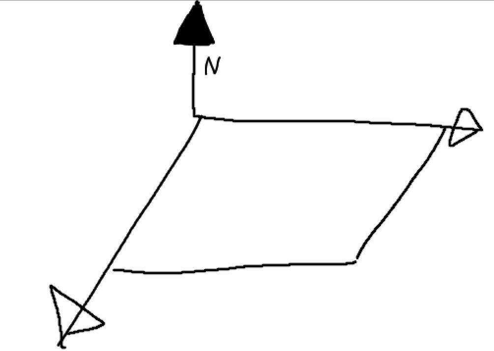

Normalvektor bestimmen.
-
Was ist ein Normalvektor?:
Ein Normalvektor ist ein Vektor, der zu einem anderen Vektor oder einer Ebene orthogonal ist.

-
Wie Berechnet man einen Normalvektor?
Hat man zwei, sich kreuzende / treffende Vektoren, lässt sich der Normalenvektor einfach durch
das Kreuzprodukt ermitteln.